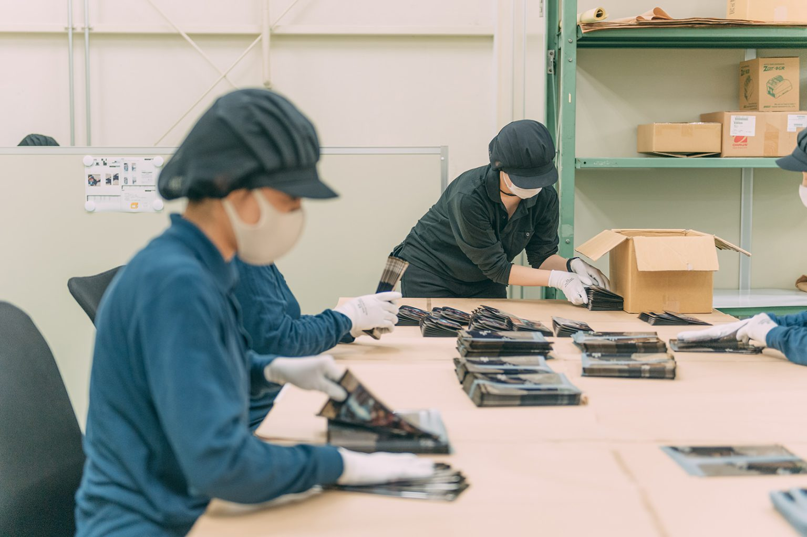

事業内容について

LIGHT WORK
仙台駅東口から5分、落ち着いて働ける作業所。
リンクワークス東口は、就労継続支援A型の施設です。落ち着いた環境のなかで、手先を使った軽作業に取り組めます。
OVERVIEW
未経験でも、大丈夫。
未経験でも、大丈夫。
コツコツが、力になる。
あなたのペースで、進める。
リンクワークス東口の軽作業は、未経験の方でも基礎からていねいにお教えします。自分のペースで少しずつ作業に慣れていける環境です。

作業風景

業務内容
体調やペースに合わせて、無理なく取り組める作業をご用意しています。
検品・仕分け
商品の検品や仕分けなど、ていねいさが活かせる作業です。手順がシンプルなので初めてでも安心です。
- 商品の検品・チェック
- 仕分け・分類作業
- 数量の確認・記録

梱包・封入
商品の袋詰めや封入など、コツコツ取り組める作業です。慣れるほどスピードも上がっていきます。
- 商品の袋詰め・箱詰め
- チラシの封入・セット
- ラベル貼り
清掃・整備
施設内の清掃や備品の整理など、身体を動かしながら取り組める作業です。
- 施設内の清掃
- 備品の整理・補充
- 環境整備サポート
利用者の声を集めました！
"封入やシール貼りなど、手先を使う作業が好きなので楽しく取り組めています。スタッフさんが丁寧に教えてくれるので安心です"
S.Iさん
軽作業・封入作業担当
"落ち着いた環境で集中して作業できるのがありがたいです。検品作業も少しずつ慣れてきて、できることが増えてきました"
A.Kさん
軽作業・検品担当
"自分のペースで進められるので、体調と相談しながら無理なく続けられています。仕分け作業は達成感があって嬉しいです"
M.Tさん
軽作業・仕分け担当
"清掃や整理の作業は体を動かせるので気分転換にもなります。チームで協力して進めるのが楽しいです"
Y.Hさん
軽作業・清掃担当
DAILY FLOW
1日の流れ
作業の流れを覚えれば、初めての方でも安心して取り組めます。
- 09:30 – 10:40 朝礼・作業開始
- 10:40 – 10:50 休憩
- 10:50 – 12:00 作業
- 12:00 – 12:45 お昼休み
- 12:45 – 13:40 作業
- 13:40 – 13:45 休憩
- 13:45 – 14:40 作業・清掃・終礼